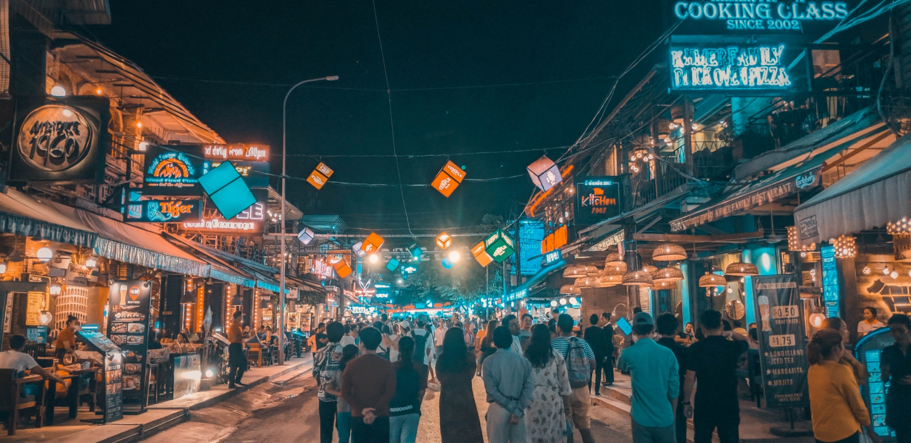
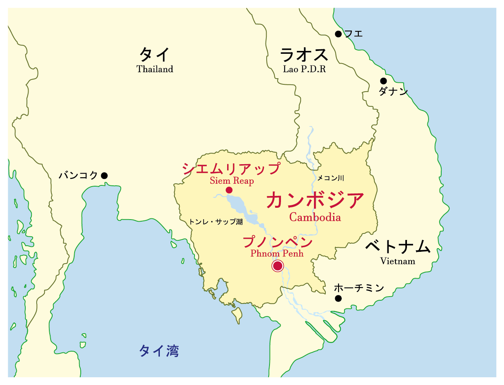

Cambodia
カンボジア
カンボジアってどんな国？
インドシナ半島に位置し、ラオス、ベトナム、タイと国境を接し、南部は南シナ海に面しています。 国土の中央を流れるメコン川と西北部のトンレサップ湖周辺の平野が国土の約40％を占めます。
国民の平均年齢は23.9歳、国民の約半数が30歳未満 （ポル・ポト政権時代の大量虐殺の影響で、40代以上の人口は少ない）。
特に中国からの直接投資により、2011年以降は7％前後の高い経済成長率を記録し続けています。 近年プノンペンやシェムリアップなど都市部の発展が目覚ましいものの、いまだに貧困に苦しむ人が多いのが現状です。

基本情報
| 正式名称 | : | カンボジア王国 |
| 面積 | : | 181,000万平方キロメートル（日本の約半分弱） |
| 人口 | : | 約1630万人 |
| 民族 | : | カンボジア人90％ |
| 首都 | : | プノンペン |
| 公用語 | : | クメール語、カンボジア語、英語 |
| 宗教 | : | 仏教 |
| 時差 | : | 日本より2時間遅い |
| 通貨 | : | カンボジア・リエル（KHR）k | ※一般的にはドルが流通しているので現地通貨に交換しなくても問題ない |
| 気候 | : | 年間を通して高温多湿で、5～10月が雨季と11月～4月の乾季の二つにわけられます。 |
 カンボジアへの行き方
カンボジアへの行き方


 シェムリアップ
シェムリアップ
 トンレサップ湖
トンレサップ湖.svg) タ・プローム/ベンメリア
タ・プローム/ベンメリア